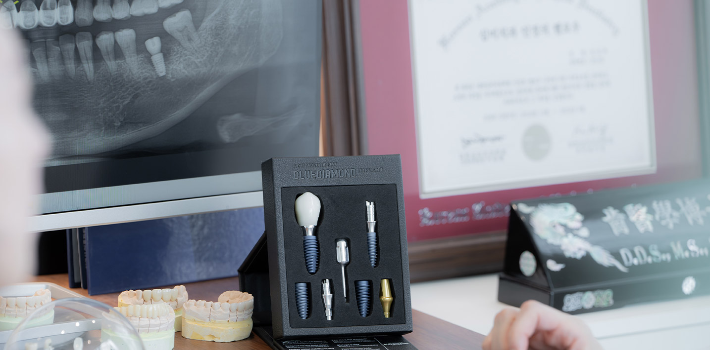
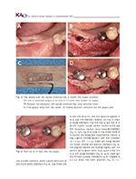

치주과 전문의의 특별한 임플란트

치주과란?
치주과는 치주염, 임플란트 주위염 등 각종 잇몸 병소를 치료하며, 특히 잇몸에 식립하는 임플란트와 골유도 재생술, 상악동 거상술을 전문적으로 담당하는 치과분야입니다.
치과의사 중치주과 전문의는 단 7%
대학병원에서 전문적으로 수련을 받은 치주과 전문의는 치과의사 중 약 7%로서
임플란트 및 연조직 수술 등, 잇몸 치료에 특화된 치과의사입니다.
풍부한 임상 경험과 전문성을 갖춘 치주과 전문의에게
대학병원급의 체계적이고 수준 높은 진료를 받아보세요.
